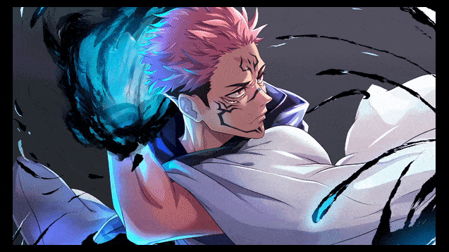

- Yuji Itadori
Yuji Itadori ( Itadori Yūji)EudiaDiaEle é o protagonista principal da série Jujutsu Kaisen . Ele é filho de Jin Itadori e Kaori Itadori , e neto de Wasuke Itadori . Yuji vivia uma vida normal na cidade de Sendai até encontrar Megumi e comer um dos dedos de Sukuna . Depois de se tornar receptáculo de Sukuna, Yuji começou a frequentar a Tokyo Jujutsu High ao lado de Megumi e Nobara como alunos do primeiro ano.
- Satoru Gojo
Satoru Gojo (Gojō Satoru)umediaSim é um dos principais protagonistas da série Jujutsu Kaisen . Ele é um feiticeiro de jujutsu de nível especial e amplamente reconhecido como o mais forte do mundo. Satoru é o orgulho do Clã Gojo , o primeiro a herdar o Sem Limites e os Seis Olhos em quatrocentos anos. Ele trabalha como professor na Escola de Jujutsu de Tóquio e usa sua influência para proteger e treinar jovens aliados fortes.
- Megumi Fushiguro
Megumi Fushiguro (Fushiguro Megumi)umふし黒ぐろ恵めぐみ é o deuteragonista da série Jujutsu Kaisen . Ele é um feiticeiro de jujutsu de 2º grau e aluno do primeiro ano da Escola de Jujutsu de Tóquio, juntamente com Yuji Itadori e Nobara Kugisaki . Megumi é meio-irmão de Tsumiki Fushiguro e, como filho de Toji Fushiguro , Megumi também é descendente do Clã Zenin . Megumi nasceu fora do clã como trunfo de Toji e acabou sendo encontrado por Satoru Gojo , que o orientou e o matriculou na Escola de Jujutsu como seu aluno.
- Nobara Kugisaki
Nobara Kugisaki (Kugisaki Nobara)釘ぎ崎para野de薔e薇ら é o tritagonista da série Jujutsu Kaisen . Ela é uma estudante do primeiro ano e feiticeira de jujutsu da 3ª série na Tokyo Jujutsu High, estudando com Satoru Gojo ao lado de Yuji e Megumi .
Nobara é uma jovem confiante e atrevida, com um caráter inabalável. Mais do que tudo, Nobara está determinada a permanecer fiel a si mesma, aconteça o que acontecer. Ela se orgulha de ser uma garota bonita e uma lutadora forte, recusando-se a deixar que alguém a influencie.
- Sukuna

Ryomen Sukuna ( Ryōmen Sukuna ? )homemりょう面めん宿para儺な , mais frequentemente chamado simplesmente de Sukuna ( Sukuna ? )宿para儺な , é o mais forte feiticeiro de jujutsu de mais de mil anos atrás. Considerado o incontestável Rei das Maldições (いのNoroi no Ō ? )呪のろ王おう , Sukuna é um dos principais antagonistas da série Jujutsu Kaisen .
Segundo a lenda, Sukuna era um Demônio Imaginário (仮か想そうの鬼き神じん Kasō no Kijin?) durante a Era Heian, a Idade de Ouro do Jujutsu. Na verdade, ele era um feiticeiro humano invicto, também conhecido como o Desgraçado (堕だ天てん Daten?), tendo derrubado inúmeros feiticeiros de jujutsu que o desafiaram. Depois de aceitar uma proposta de Kenjaku para participar do Jogo de Culling, Sukuna continuou existindo postumamente após a morte, transformando-se em um objeto amaldiçoado, um estado onde sua energia e alma amaldiçoadas foram divididas em seus vinte dedos indestrutíveis.